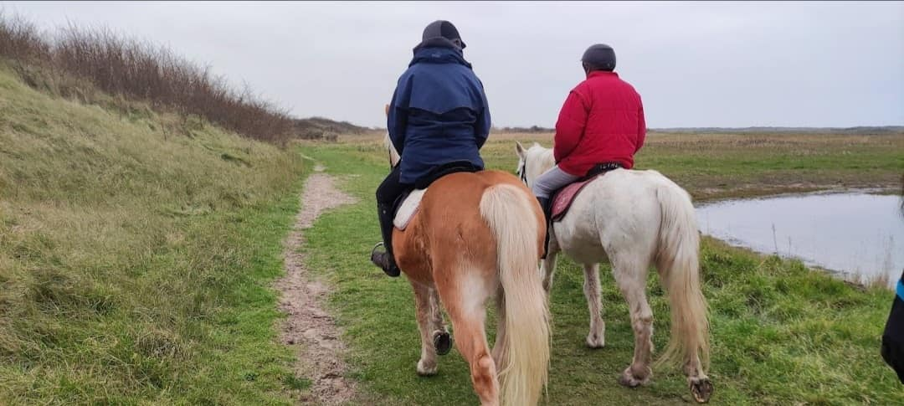

Promenades
Promenades en poney pour les petits
Le samedi matin ou après midi, ou le mercredi après midi. Pour 10 euros, un quart d'heure de pansage, un quart d'heure de cours en manège et une promenade de 15 minutes. Réservation possible au 06 77 66 05 82.
Téléchargez le bon cadeau pour faire gratuitement un tour de poney lors d'une manifestation.

Promenades pour les plus grands
Grâce au parachutage camion, de nombreuses promenades nous sont accessibles. Nous appelons " promenade " une sortie qui se déroule sur une demi journée au contraire d'une randonnée qui se déroule sur plusieurs jours. Les dates des prochaines promenades sont accessibles sur notre page Facebook ou sur la boutique en ligne. Les informations pratiques concernant la promenade que vous avez choisie sont disponibles au club. Afin de vous garantir une bonne organisation, les promenades doivent être impérativement réglées à l’avance au plus tard le samedi précédant la promenade à 18 heures. Les réservations sont faites par ordre chronologique de règlement, généralement une semaine à l’avance. Un cavalier accepté en liste d’attente et est prévenu en cas de désistement au moins 24 heures à l’avance.
